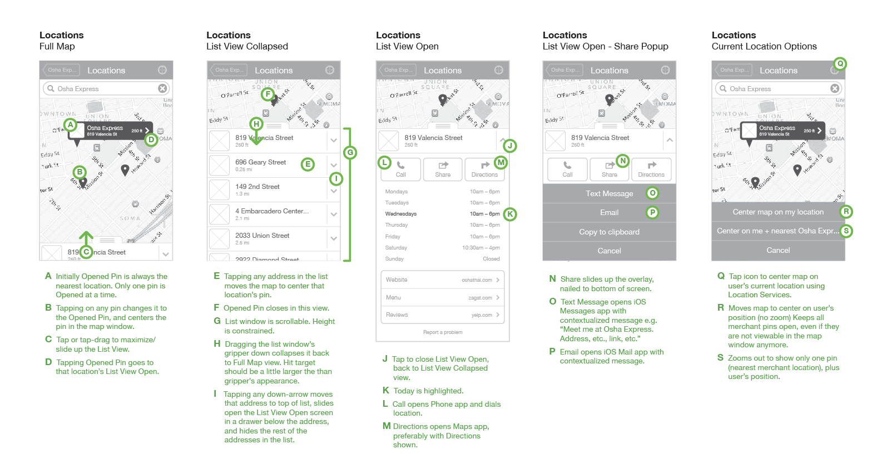

Project Name Goes Here
Role
Research, Wireframes, Prototypes
Launch Date
Month, 2016
Project Deliverable
User Testing Feeedback, Clickable Prototypes, Wireframes & Functional Annotations
Step 01
Discovery
VINCE is a dual-gender, global lifestyle brand. The goal of this redesign was to support the direction that vince.com should become the 'flagship' store.

Step 02
Whiteboarding
VINCE is a dual-gender, global lifestyle brand. The goal of this redesign was to support the direction that vince.com should become the 'flagship' store.
Step 03
Responsive Wireframes & Prototypes
VINCE is a dual-gender, global lifestyle brand. The goal of this redesign was to support the direction that vince.com should become the 'flagship' store.
Step 04
Final Deliverables
VINCE is a dual-gender, global lifestyle brand. The goal of this redesign was to support the direction that vince.com should become the 'flagship' store.